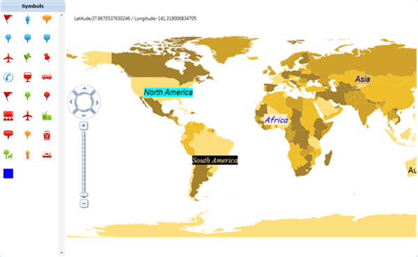

To disable Symbol Palette, set the SymbolPaletteVisibility property of MapControl to Collapsed. Symbol Palette will be hidden from the MapControl.
|
[XAML]
<!—Symbol Palette Visibility Set as Visible in the MapControl -->
<maps:MapControl SymbolPaletteVisibility="Collaped" LayeredContent="{Binding ElementName=shapeControl}" x:Name="Map" NavigationControlPosition="Left" EnableColorPalette="True" ColorPalette="ColorPalette3" > <maps:MapControl.Layers> <maps:Layers> <maps:ShapeFileLayer Uri="LabelsAndSymbolsDemo.ShapeFiles.world.shp" x:Name="shapeControl" EnableLabel="{Binding IsChecked,ElementName=EnableLabel_ChkBox,Mode=TwoWay}" > </maps:ShapeFileLayer> </maps:Layers> </maps:MapControl.Layers> </maps:MapControl> |
|
[C#]
// Symbol Palette Visbility Set as Visible for MapConrol Instance Maps to Enable the Symbol Palette
this.Map.SymbolPaletteVisibility = Visibility.Collapsed; |
Adding symbol item to Symbol Palette
To add a symbol item create an object for SymbolPaletteItem and set the PaletteItem property to SymbolPaletteItem. Then add the created object to the SymbolPaletteItems Collections of the Symbol Palette.
|
[C#]
// rectangle is added as Symbol Palette item in SymbolPaletteItems Collection. SymbolPaletteItem symbolItem; symbolItem = new SymbolPaletteItem(); Rectangle rect = new Rectangle(); rect.Fill = new SolidColorBrush(Colors.Blue); symbolItem.PaletteItem = rect; this.Map.SymbolPalette.SymbolPaletteItems.Add(symbolItem); |

Figure 34: Add Custom Symbol Palette Item